LogMX plugins for Eclipse, IntelliJ IDEA, and NetBeans
If you are using LogMX to analyze logs coming from your Java application, then this page is for you:
when LogMX detects a Java stack trace in a log entry, it transforms each stack trace line into a link in LogMX GUI.
When such a link is clicked, running instance of Eclipse/VSCode/IntelliJ-IDEA/NetBeans opens the corresponding Java method
from this stack trace.
Also, simply hovering over this link with the mouse will show the corresponding Java source directly within LogMX:
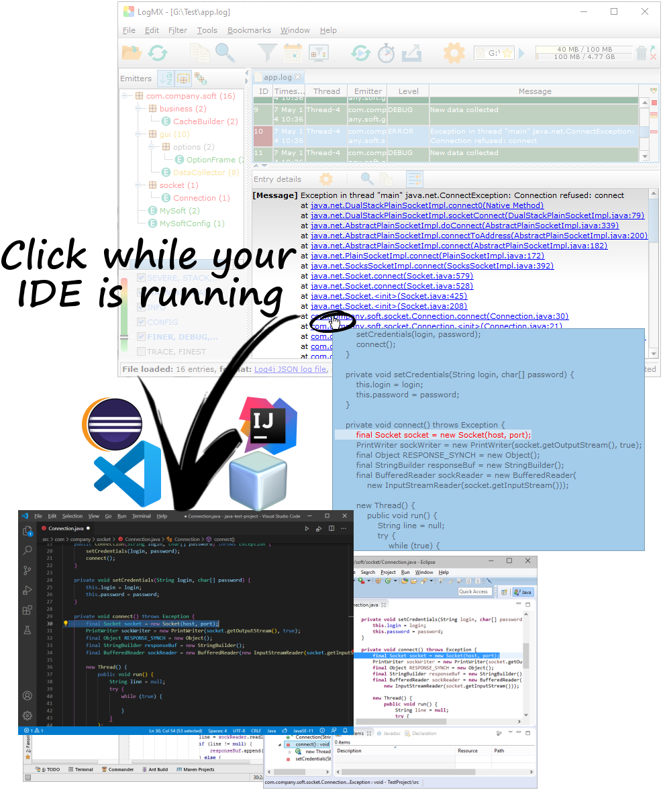
Table of contents:
1.1. Installing Eclipse plugin
| At least v3.6.2 (Helios SR2), 32/64 bits |
| At least v6, 32/64 bits |
| At least v5.4.0 |
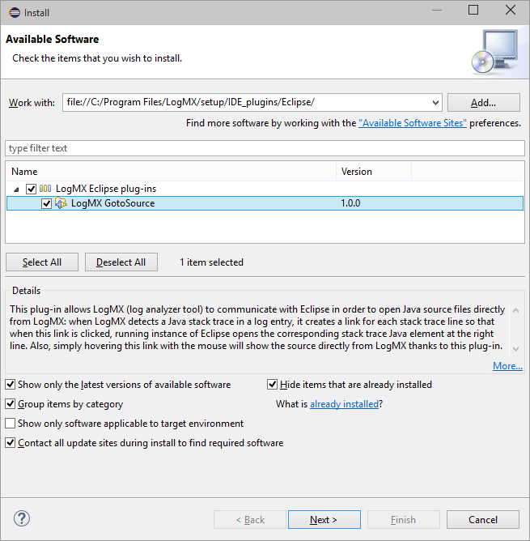
To install "LogMX GotoSource" plugin in Eclipse, you shall use the Eclipse Update-site provided in
"<LogMX_install_dir>/setup/IDE_plugins/Eclipse".
Here are the steps to do this:
- In Eclipse, click on menu "Help", then on item "Install New Software..."
- Click on the button "Add...", then on "Local..."
- Choose the directory "<LogMX_install_dir>/setup/IDE_plugins/Eclipse"
- Click on button "OK" for both dialogs (giving a name to this repository is optional)
- A plug-in category named "LogMX Eclipse plug-ins" should now be displayed: click on button "Select All", then on button "Next >"
- Click on button "Next >" for each step (accepting the License if you agree with its terms), then on button "Finish"
- Eclipse should warn you about installing a software that contains unsigned content: just click OK
(signature certificates now use SHA-256, which is not supported by Java 6, so we could not properly sign
the plug-in to allow Java 6 users to install it)
- Restart Eclipse (Eclipse should ask you to do it)
1.2. Configuring Eclipse plugin
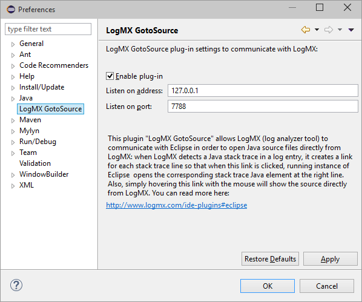
To configure "LogMX GotoSource" Eclipse plugin, you shall click on menu "Window", item "Preferences". In the left tree, click on "LogMX GotoSource".
The preferences page should now display these options:
- Check to enable the plug-in (will listen to the port described below to communicate with LogMX).
- Uncheck to disable the plug-in without un-installing it (LogMX will not be able to use Eclipse to view source).
|
Shall match the address specified in LogMX (see 5.1. Configuring LogMX).
Usually set to "127.0.0.1" (IP v4), "::1" (IP v6), or "localhost" (IP v4/v6)
|
Shall match the TCP port specified in LogMX (see 5.1. Configuring LogMX).
Default port for Eclipse plugin is 7788 (ASCII lovers will understand)
|
1.3. Using Eclipse plugin
2.1. Installing VSCode plugin
| At least v1.48.0 |
| At least v5.4.0 |
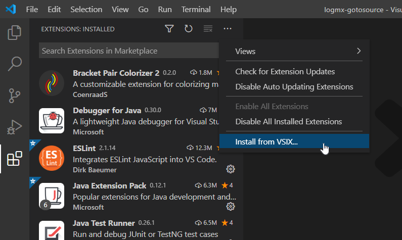
To install "LogMX GotoSource" plugin in VSCode, you shall use the VSIX file provided in
"<LogMX_install_dir>/setup/IDE_plugins/VSCode".
Here are the steps to do this:
- In VSCode, open the "Extensions" panel ("File" > "Preferences" > "Extensions")
- In the top right corner of the "Extensions" panel, click on the 3 dots icon, then pick the option "Install from VSIX..."
- Choose the file "<LogMX_install_dir>/setup/IDE_plugins/VSCode/logmx-gotosource.vsix"
2.2. Configuring VSCode plugin
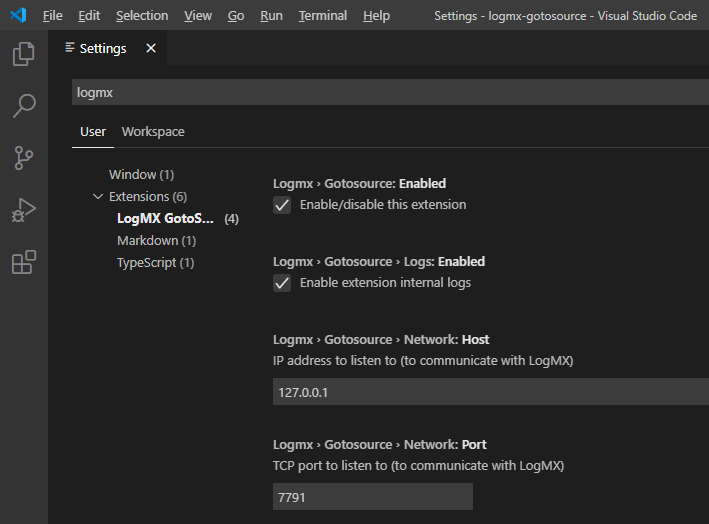
To configure the "LogMX GotoSource" VSCode plugin, you shall click on the menu "File" > "Preferences" > "Settings".
Then, in the text field "Search settings", type "logmx". The tree on the left should now display the category "LogMX GotoSource": click on it.
These are the settings you may want to update:
- Check to enable the plug-in (will listen to the port described below to communicate with LogMX).
- Uncheck to disable the plug-in without un-installing it (LogMX will not be able to use VSCode to view source).
|
Shall match the address specified in LogMX (see 5.1. Configuring LogMX).
Usually set to "127.0.0.1" (IP v4), "::1" (IP v6), or "localhost" (IP v4/v6)
|
Shall match the TCP port specified in LogMX (see 5.1. Configuring LogMX).
Default port for VSCode plugin is 7791
|
Changing these settings should not require a restart of VSCode. At any time, you can also restart the plugin and its server using the command
"logmx.gotosource.restart" using the VSCode Command Palette (Ctrl+Shift+P).
To use this VSCode plugin, you just have to use the LogMX "GotoSource" feature (see 5.2. Using LogMX "GotoSource" feature).
3.1. Installing IntelliJ IDEA plugin
| At least v11.0 |
| At least v6, 32/64 bits |
At least v5.4.0 for IntelliJ IDEA v11-v15
At least v5.5.1 for IntelliJ IDEA 2016+
|
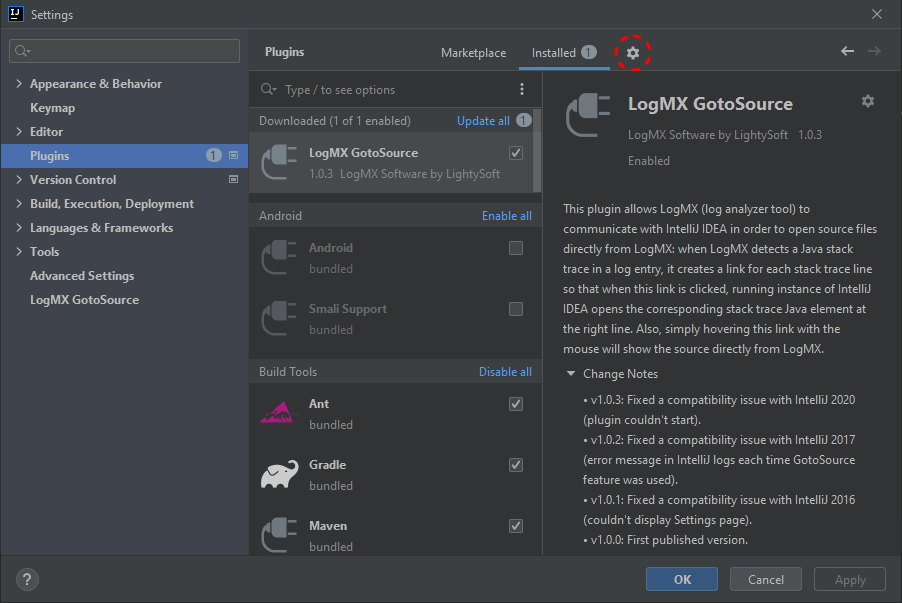
To install "LogMX GotoSource" plugin in IntelliJ IDEA, you shall use the ZIP archive provided in
"<LogMX_install_dir>/setup/IDE_plugins/IntelliJ_IDEA".
Here are the steps to do this:
- In IntelliJ IDEA, click on menu "File", item "Settings..."
- In the left tree, go to "Plugins", then click on button "Install plugin from disk..." (gears icon at the top)
- Choose the following file from the directory "<LogMX_install_dir>/setup/IDE_plugins/IntelliJ_IDEA/":
- [IntelliJ IDEA 2020.2.3 and later] "LogMX GotoSource IntelliJ IDEA v2020.2-and-later Plug-in.zip"
- [IntelliJ IDEA 2016-2019] "LogMX GotoSource IntelliJ IDEA v2016-2019 Plug-in.zip"
- [IntelliJ IDEA v11-v15] "LogMX GotoSource IntelliJ IDEA v11-v15 Plug-in.zip"
- Click on button "OK" for both dialogs
- If IntelliJ IDEA is older than 2020, restart IntelliJ IDEA (the IDE should ask you to do it)
3.2. Configuring IntelliJ IDEA plugin
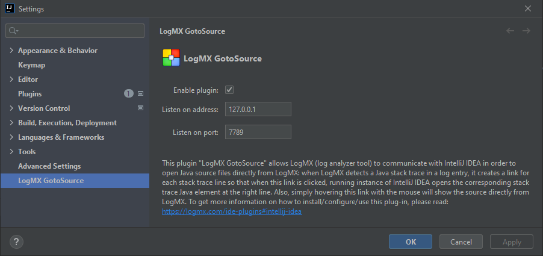
To configure "LogMX GotoSource" IntelliJ IDEA plugin, you shall click on menu "File", item "Settings...". In the left tree, go to
"LogMX GotoSource" (or "Other Settings" then "LogMX GotoSource" for IntelliJ IDEA v11-v15).
The preferences page should now display these options:
- Check to enable the plug-in (will listen to the port described below to communicate with LogMX).
- Uncheck to disable the plug-in without un-installing it (LogMX will not be able to use IntelliJ IDEA to view source).
|
Shall match the address specified in LogMX (see 5.1. Configuring LogMX).
Usually set to "127.0.0.1" (IP v4), "::1" (IP v6), or "localhost" (IP v4/v6)
|
Shall match the TCP port specified in LogMX (see 5.1. Configuring LogMX).
Default port for IntelliJ IDEA plugin is 7789
|
3.3. Using IntelliJ IDEA plugin
4.1. Installing NetBeans plugin
| At least v8.0, 32/64 bits |
| At least v7, 32/64 bits |
| At least v6.6.0 |
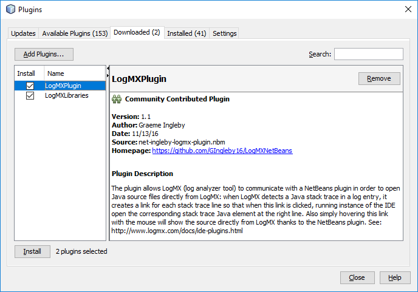
To install LogMX GotoSource plugin in NetBeans, you shall use the two NBM files provided in
"<LogMX_install_dir>/setup/IDE_plugins/NetBeans".
Here are the steps to do this:
- In NetBeans, click on menu "Tools", item "Plugins..."
- In the tab "Downloaded", click on the button "Add Plugins..."
- Choose the two NBM files from the directory "<LogMX_install_dir>/setup/IDE_plugins/NetBeans/"
- Then back to the "Plugins" window, click on the button "Install" (you can ignore the warnings about unsigned plugins)
- Restart NetBeans (NetBeans should ask you to do it)
4.2. Configuring NetBeans plugin
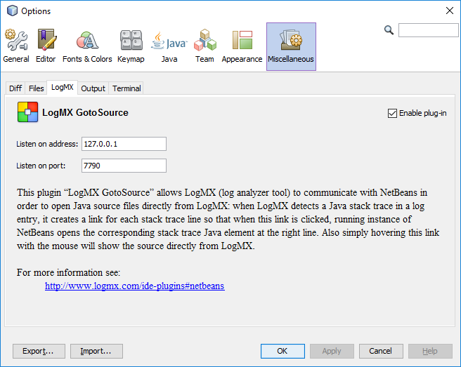
To configure "LogMX GotoSource" NetBeans plugin, you shall click on menu "Tools", item "Options". Then go to tab "Miscellaneous", then tab "LogMX".
The preferences page should now display these options:
- Check to enable the plug-in (will listen to the port described below to communicate with LogMX).
- Uncheck to disable the plug-in without un-installing it (LogMX will not be able to use NetBeans to view source).
|
Shall match the address specified in LogMX (see 6.1. Configuring LogMX).
Usually set to "127.0.0.1" (IP v4), "::1" (IP v6), or "localhost" (IP v4/v6)
|
Shall match the TCP port specified in LogMX (see 6.1. Configuring LogMX).
Default port for NetBeans plugin is 7790
|
4.3. Using NetBeans plugin
5. LogMX "GotoSource" feature
- click on menu "Tools", item "Options"
- in the "General" tab, click on button "Eclipse/VScode/IntelliJ/NetBeans integration..."
- set the address and port to the values you specified in your IDE plugin options (§1.2, §2.2, §3.2, or §4.2)
- for better performance when LogMX will fetch the source code, you can uncheck the IDEs you don't currently use and/or move your preferred IDE on top of the list:
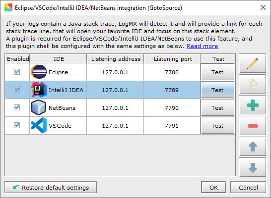
5.2 Using LogMX "GotoSource" feature
- move your mouse over a stack trace line to display (inside a tooltip) the source preview for the hovered stack line
- click on a stack trace line to bring up your IDE, displaying the file and line matching the clicked stack line
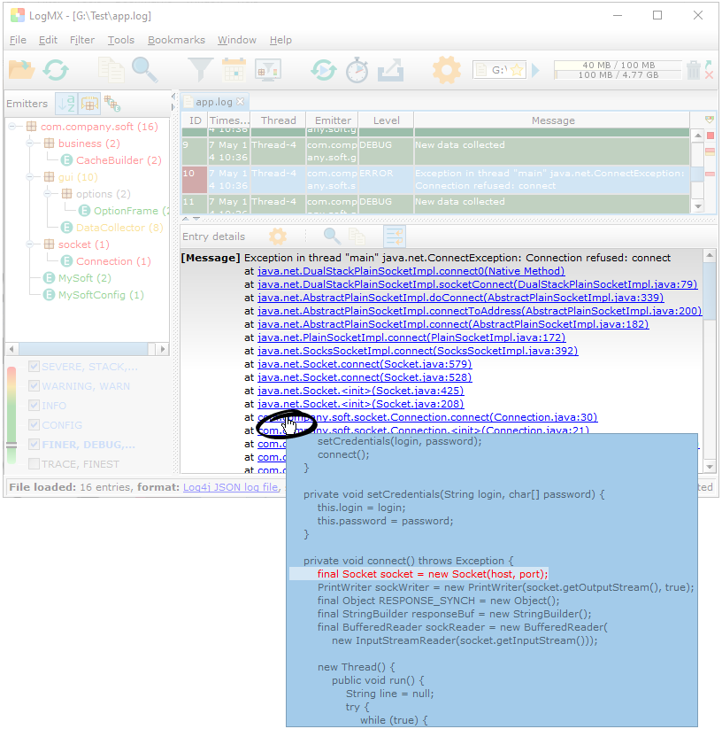
If you want to use the LogMX "GotoSource" feature with an IDE that is currently not supported, you can send us a feature request (contact@logmx.com),
or implement the IDE plug-in yourself using the provided API: https://logmx.com/dev/ide-plugins/api/index.html.